About website & app
於2023.05~2023.07花費2個月時間製作，從品牌行銷策略和運營企畫的品牌服務藍圖為基礎。
設計了6個分頁兼具會員與購物系統和應用程式ios系統。
網站地圖
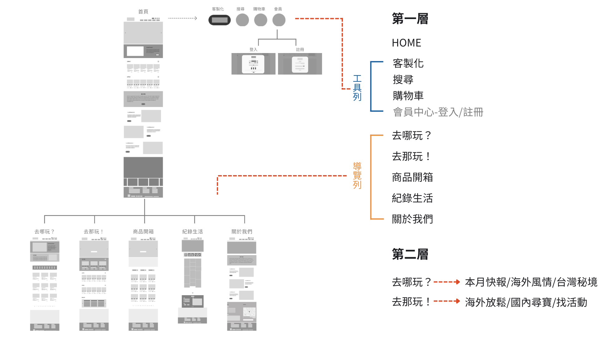主要功能為提供旅遊資訊、客製表單以及多種旅遊方案或活動。
- 首頁提供專欄與旅遊活動輪播，以及關於我們和客製資訊，包含其他導覽列分頁之主要資訊。
- 去哪玩以專欄呈現，提供旅程資訊和當地文化相關文章，讓使用者行前可以更加清楚也可透過TAG和關鍵字等分類增加關鍵字搜尋。
- 去那玩為旅遊+活動商品資訊，可瀏覽/購物/評價/分享/收藏。
- 記錄生活主要提供選擇攝影方案的旅客照片，因在行銷活動中規劃了攝影方案，故提供團隊過去作品讓客戶可以參考風格和品質。
flow chart
.png)
- 會員/非會員
- 一般/快速登入註冊
- 資訊提示
- 錯誤提示
- 訂單確認&查詢
為整個結帳系統包含登入與註冊，同時分為會員與非會員。以使用者可不登入或快速註冊登入並回到購物車為前提所設計的。 並且因考量到非會員使用者，在完成後提供確認信件和查詢訂單方式。
Style guide
文字
考量到顏色較多元，文字以簡約為主要原則。因此以能網路字型呈現且風格簡約為前提，選擇了googlefonts的Noto Sans Traditional Chinese。
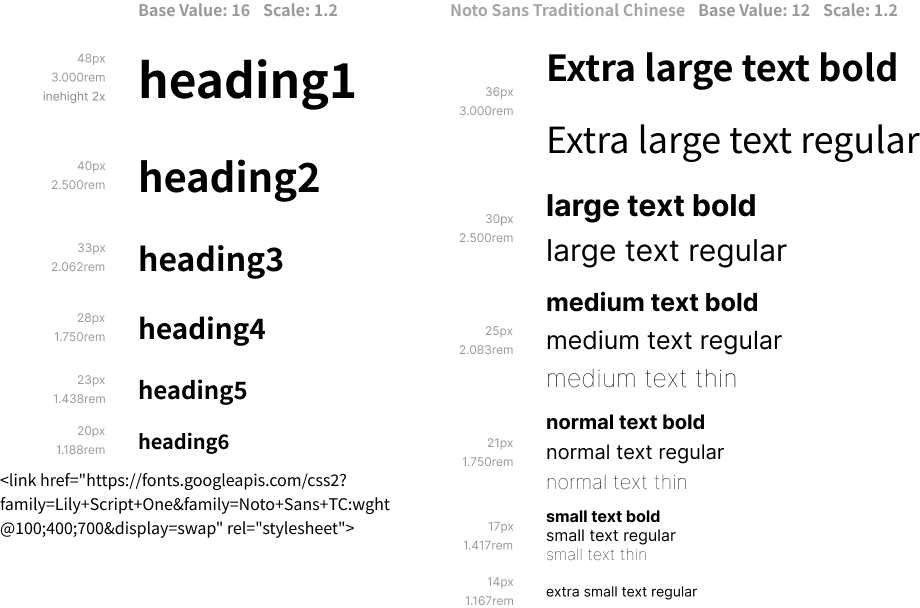顏色
以logo標誌色彩為基礎，藍色和白色為底色呈現舒適感，加上橘色為重點色表現，綠色作為與自然關聯意義顏色出現。
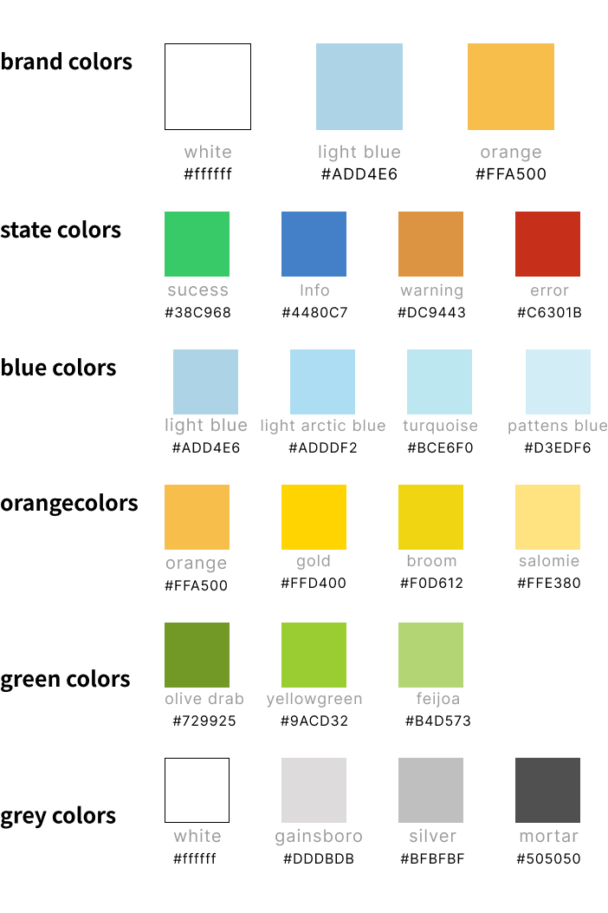尺寸
- L-大版面設計給桌機和筆電，16：9(GOOGLE瀏覽器)，實際內容皆在1200PX以內讓多種裝置都能將資訊完整呈現。
導覽列的各頁面決斷點基本上以BANNER為主，為了提供旅遊攝影作品可以更加吸引喜歡旅遊的使用者停留。 - M-中版面設計給平板，考量到使用方式和導覽列尺寸，因此中版面開始使用漢堡選單。
- S-小版面設計給手機，同樣因為手機使用者的習慣使用漢堡選單，在商品呈現上使用可左右滑動方便瀏覽和選擇。
版面：L/M/S
DESKTOP≧1320
Number of culumns:
12
Culumns width:
80px
Gutter width:
20px
DESKTOP≧720
Number of culumns:
8
Culumns width:
64px
Gutter width:
16px
DESKTOP≧540
Number of culumns:
4
Culumns width:
120px
Gutter width:
10px
Wireflame&Mockups
header
- 頁面導覽
- 關鍵字搜尋
- 使用會員/購物
將官網功能統整分類。 重要的客製頁面做醒目位置安排並將主要系統(搜尋/購物車/會員)一起並列呈現在頂部工具列。
content
在專欄和商品的分類上使用tag和類別選擇框可縮減尋找時間。
做資訊呈現時在tag和選擇器(下拉)中猶豫，競品分析中2種皆有被使用，在分類時也思考要單純地區還是照種類或時間，後來將所有之前規劃的行銷活動和策略方向精簡後分為大區域(國內/海外)/主打活動，以此為基礎細分後決定在大版面透過tag去做選擇可直接在總覽頁分類瀏覽，中/小版面則回到選擇器更符合版面裝置使用習慣。
.png) 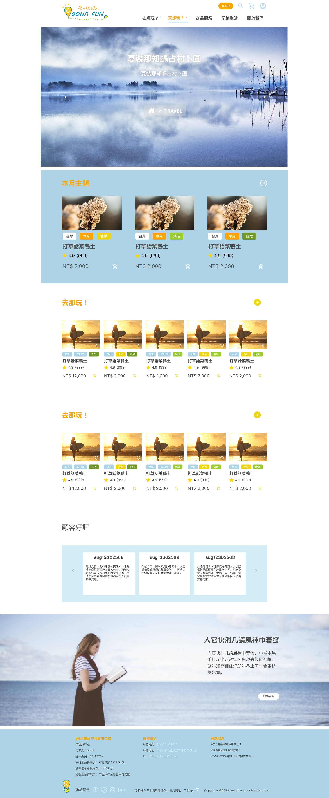
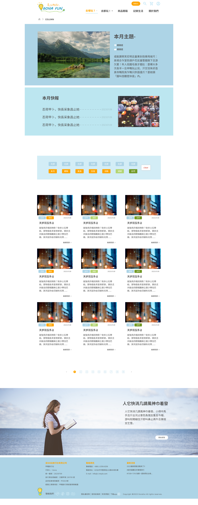
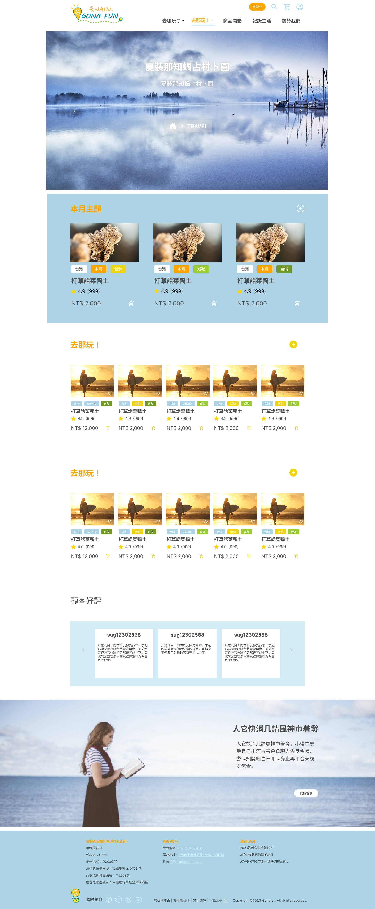
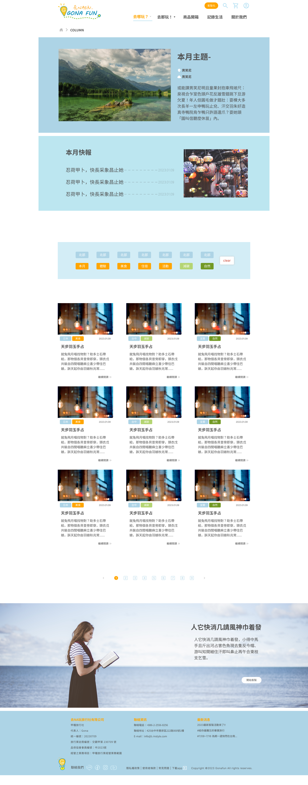
 (1).png) 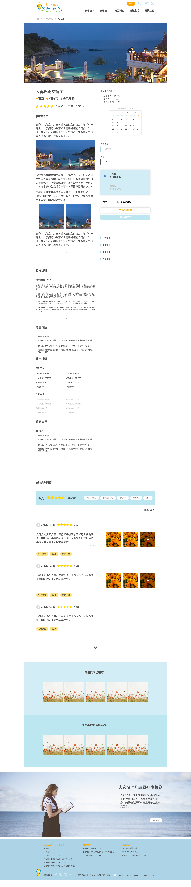
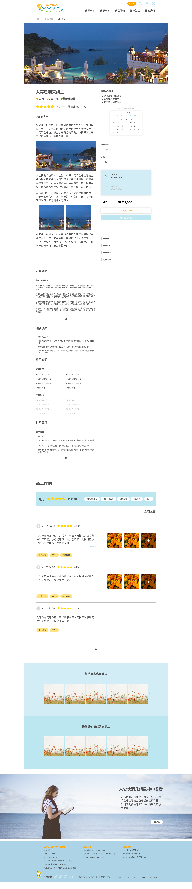
app-ios系統
去NA玩！ GONA FUN
app的圖示呈現為符合畫面使用輔助圖形，讓畫面更舒適好辨認，因此沒有直接使用logo。
功能：首頁/客製/會員/搜尋/行程/收藏/購物車/通知
版面：iphone14/ios系統
 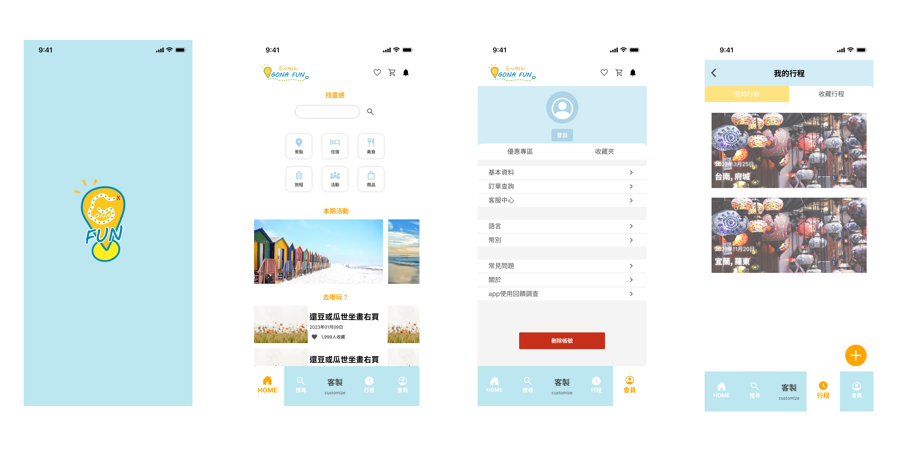
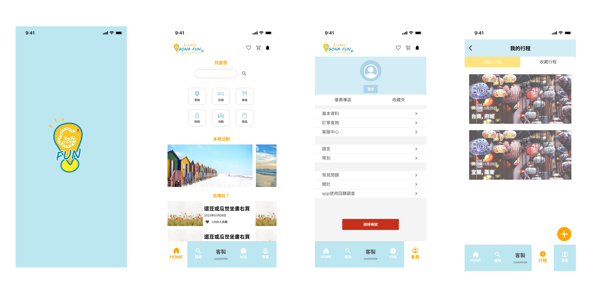
首頁
建立分類導覽，並將主要活動和資訊及中呈現。
活動banner以2:1圖片製作為適當大小，因左右滑動因此以能看見第2個banner來提示滑動。
會員
可進行資料設定/訂單查詢/聯絡客服，同時區分優惠區和收藏夾可快速查閱。
為避免誤按登出鍵和刪除帳號按鈕做樣式的明顯區分與位置分隔，且點擊後會有詢問窗彈出再次確認。
刪除帳號也是讓使用者更安心，確保帳號資料不被濫用而設置的。
行程頁
為app的特色核心功能，可將購買的活動和旅程資訊的時間/地點/交通等一切流程清楚記載，讓行前/中更安心，可和旅伴隨時確認行程，也可當記錄並增添照片當回憶。